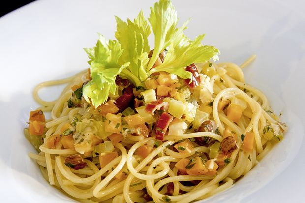

Spaghetti an Gemüse-Zitronen-Sauce

Zutaten:
- 300 g Rüebli
- 300 g Stangensellerie
- 1 Zwiebel mittelgross
- 2 Knoblauchzehen
- 50 g Dörrtomaten in Öl eingelegt
- 1 Bund Petersilie glattblättrig
- 50 g Haselnusskerne
- Salz
- 4 Esslöffel Olivenöl
- 1/2 dl Noilly Prat
- 1 dl Gemüsebouillon
- 1 Zitrone
- 400 g Spaghetti
- 1 1/2 dl Rahm
- schwarzer Pfeffer aus der Mühle
- 50 g Parmesan frisch gerieben
Zubereitung:
- Rüebli und Stangensellerie rüsten und in kleine Würfelchen schneiden. Die Zwiebel und die Knoblauchzehen schälen und fein hacken. Die Dörrtomaten auf Küchenpapier trockentupfen, dann ebenfalls klein würfeln. Die Petersilie fein hacken.
- Die Haselnusskerne in einer trockenen Pfanne ohne Fettzugabe leicht rösten. Etwas abkühlen lassen, dann grob hacken.
- In einer grossen Pfanne reichlich Salzwasser aufkochen.
- In einer zweiten Pfanne das Olivenöl erhitzen. Zwiebel und Knoblauch darin andünsten. Dann Rüebli, Stangensellerie und Dörrtomaten beifügen und kurz mitdünsten. Noilly Prat und Bouillon beifügen. Die Schale der Zitrone dünn dazureiben. 2 Esslöffel Saft auspressen und ebenfalls beifügen. Alles ungedeckt bissfest garen.
- Inzwischen die Spaghetti ins kochende Salzwasser geben und bissfest garen.
- Den Rahm zum Gemüse giessen und auf grossem Feuer leicht einkochen lassen. Am Schluss Petersilie und Haselnusskerne beifügen. Die Sauce mit Salz und Pfeffer sowie nach Belieben noch etwas Zitronensaft abschmecken.
- Die Spaghetti abschütten und sofort mit der Gemüse-Zitronen-Sauce und dem Parmesan mischen. Heiss servieren.
Nährwert pro Portion:
- 781 kKalorien
- 3267 kJoule
- 84g Kohlenhydrate
- 21g Eiweiss
- 37g Fett
Erschienen in 12 | 2010, S. 106
© Annemarie Wildeisens KOCHEN – https://www.wildeisen.ch/